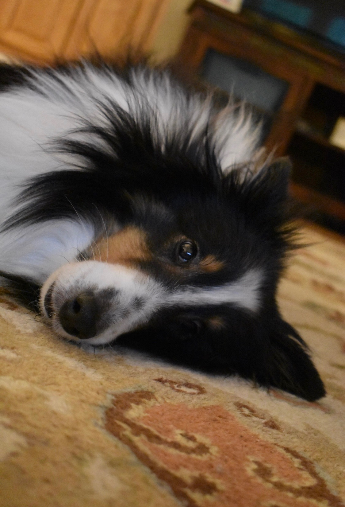
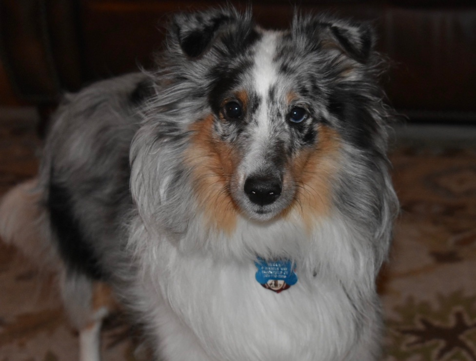
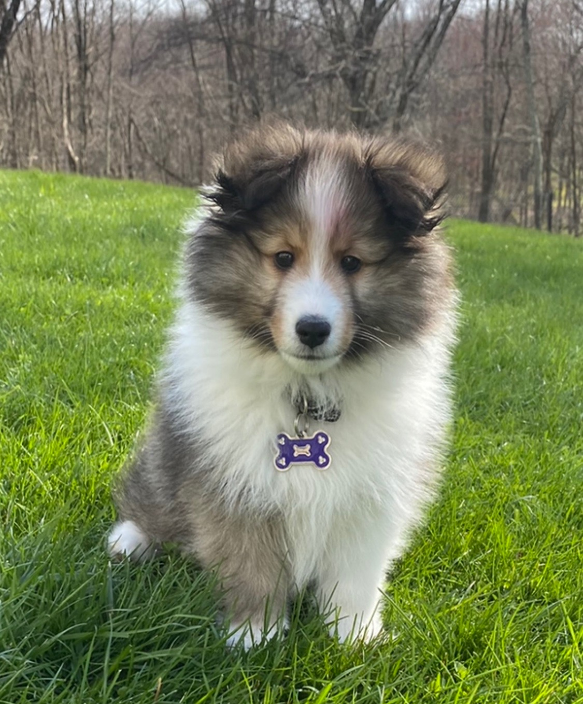
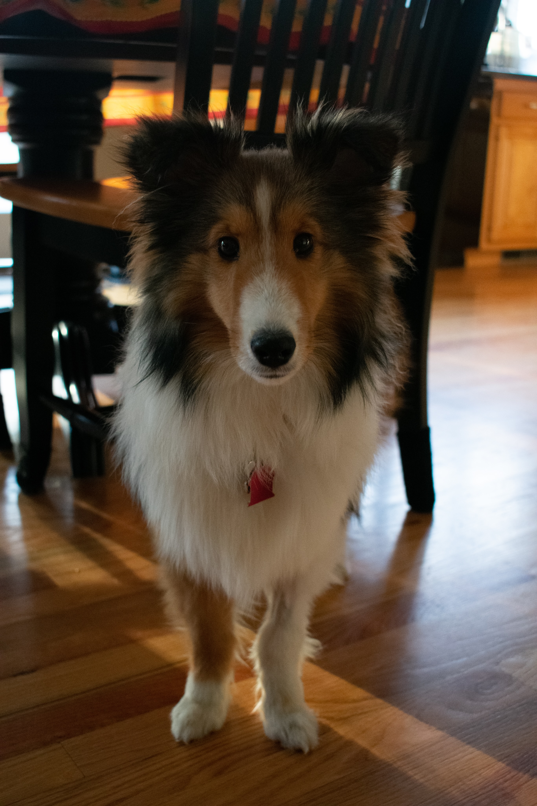
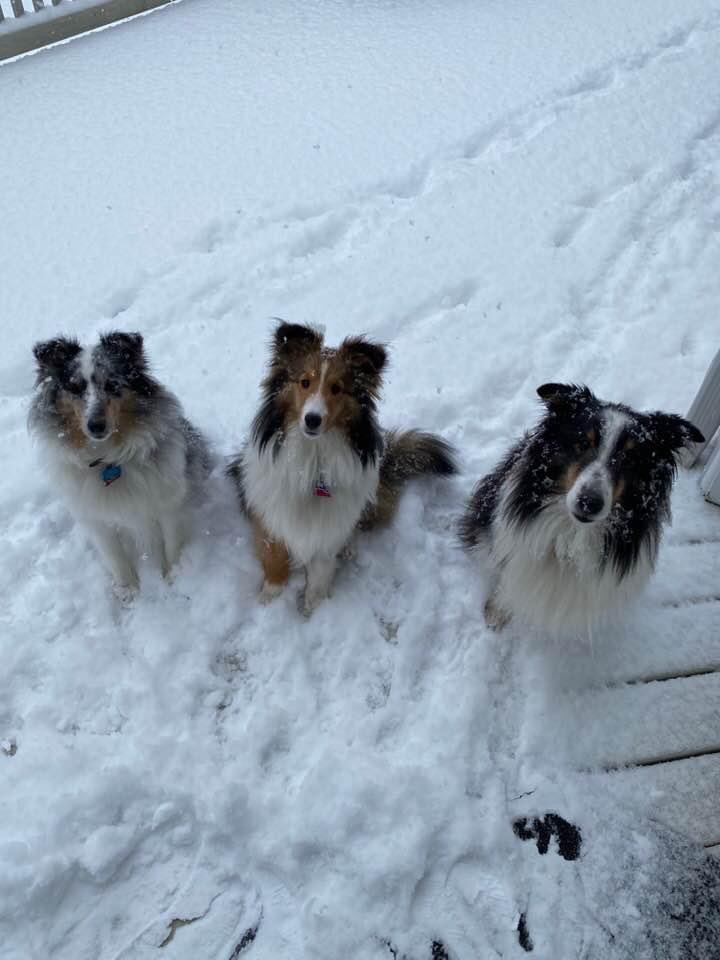

My Dogs
I have three dogs and they are all shelties. Their names are Izze, Sierra, and Hudson.
Izze
Some facts about Izze:
- Izze is the first child of all three dogs.
- We got her in 2009 and she is now 11 years old.
- She's a tri sheltie which means she is black, white, and a little brown.
- She is named after the Pepsi drink "Izze" (pronouced "Izzy") because my dad works for Pepsi and people constantly think we're just spelling her name wrong.
- She used to run away all the time so we got a fenced in yard.
- She's one of the most loving dogs you'll ever meet.
- She gives lots of kisses despite her bad breath.
Here is a picture of her:

Sierra
Some facts about Sierra:
- Sierra is the middle child of all three dogs.
- We got her in 2014 and she is now 6 years old.
- She's a blue merle sheltie which means she kind of looks like an Australian Shephard.
- She is named after the Pepsi drink "Sierra Mist".
- She definitely has undiagnosed anxiety because she's nervous all the time.
- When she's not anxious she loves to play with her brother and sister.
- She's a really weird dog, but we love her any way.
Here is a picture of her.

Hudson
Some facts about Hudson:
- Hudson is the baby of the family.
- We got him in April of 2020 and is almost a year old.
- He's a sable sheltie which means he looks like Lassie.
- He wasn't really named after anything, we just happened to pass the Hudson River around the time we got him and thought it was a cool name.
- We planned to get him while I was away at school so I wasn't really ever supposed to be with him that much, but he ended up turning into a quarantine puppy.
- The day we got him he got 1 million views on TikTok and now has 30k followers.
- He's so friendly and loves almost everyone.
- He also loves to cuddle and slept with me every night when I was home.
Here is a picture of him when we first got him:

Here is a picture of him now:

While being at school I really miss my dogs because they bring so much light to my life with all of their personalities and fluff.
This is a picture of all of them from the other day when it snowed:
